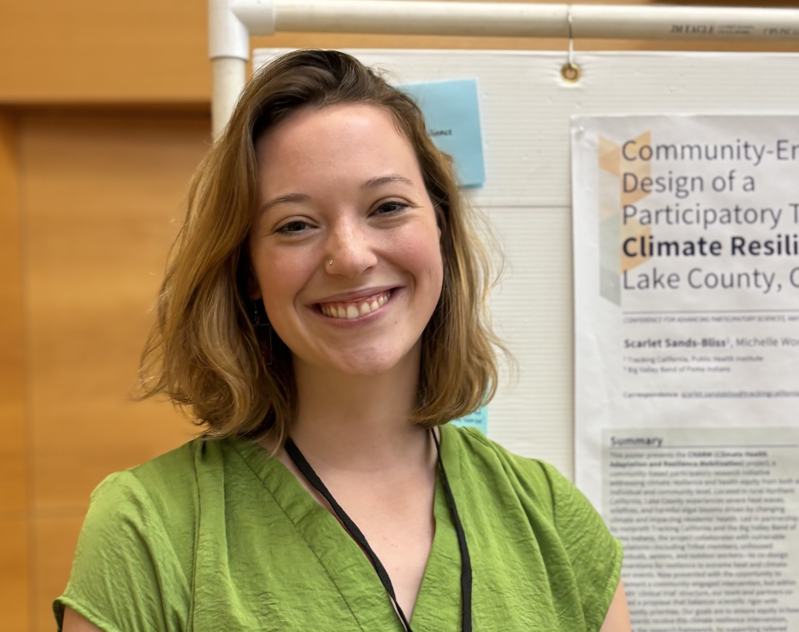
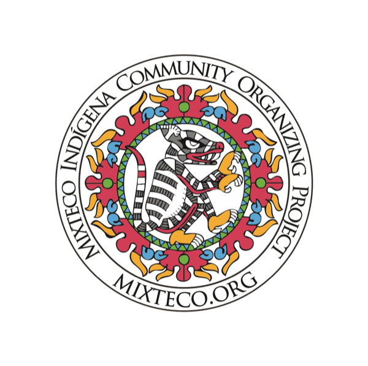
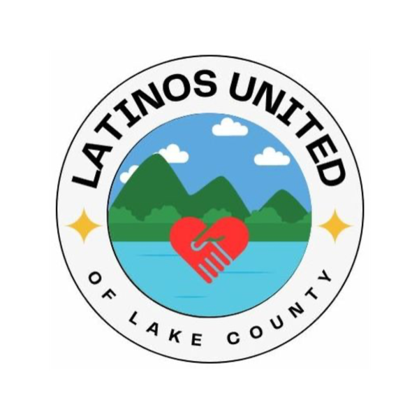
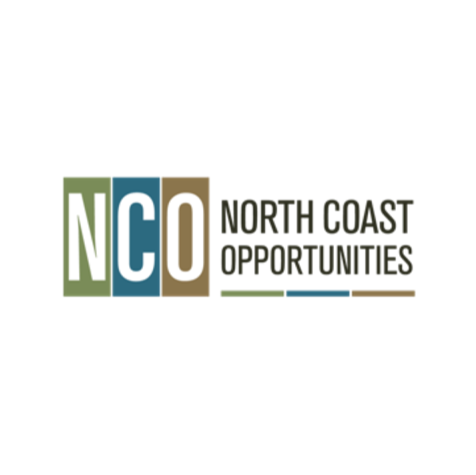

Shubhayu Saha, PhD, MA
Shubhayu SahaAs Executive Director, Shubhayu amplifies community-engaged climate resilience programs and makes environmental health data accessible and actionable through partnerships.
Tracking California makes environmental health data understandable, accessible, and useful — so communities, researchers, and decision-makers can act on it.
Formerly the California Environmental Health Tracking Program, we track environmental hazards and the health outcomes connected to them across California. We bring together data on air quality, water, climate, pesticides, and dozens of health conditions, and we work directly with the communities those numbers describe.
Two halves that depend on each other: data and tools, and community partnerships.
Data & Tools
Interactive data explorers, maps, and analyses covering air quality, water, climate, pesticides, and health conditions — mapped down to the community level so patterns are visible where people live.
Explore our data & toolsCommunity Work
Partnerships, trainings, and community monitoring built alongside the people most affected — turning data into action on the ground and bringing local knowledge back into the research.
See our community work
Our work is made possible through partnerships with public agencies, universities, and community-based organizations across California.



